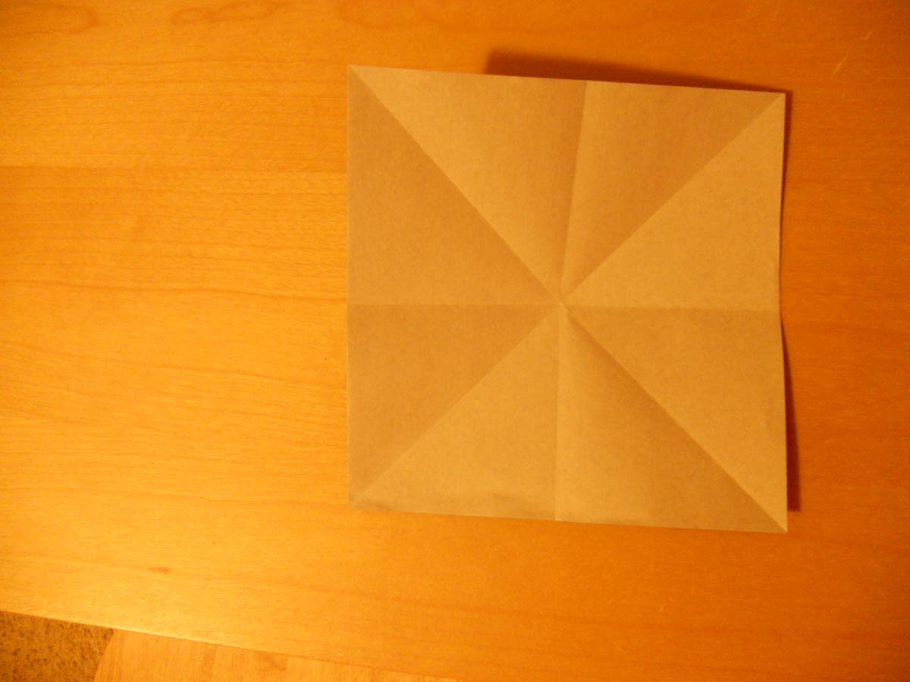
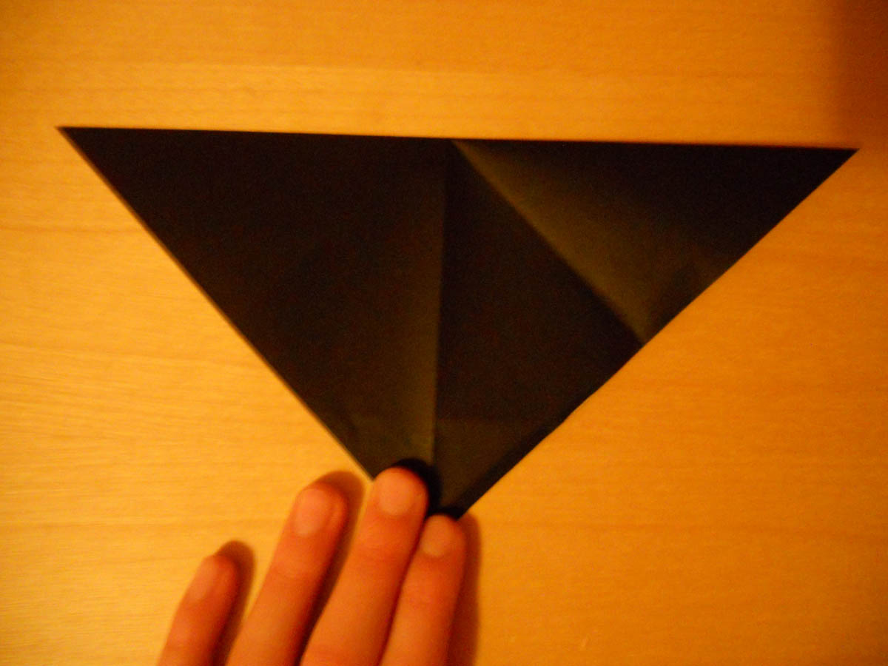
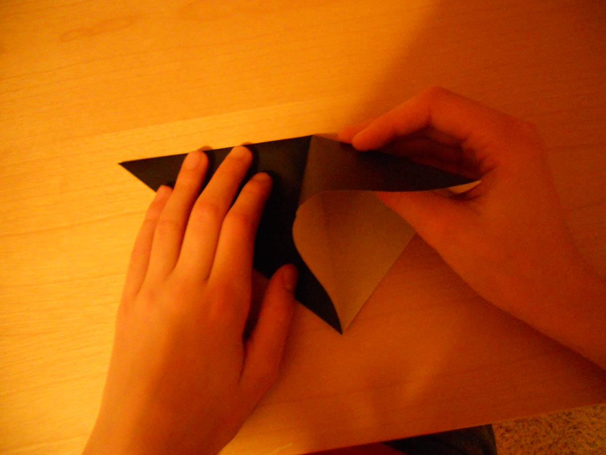
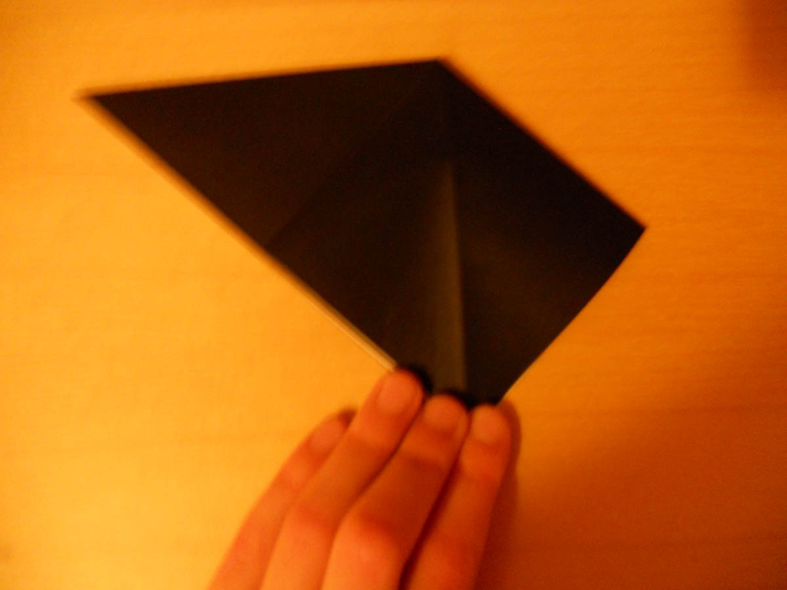
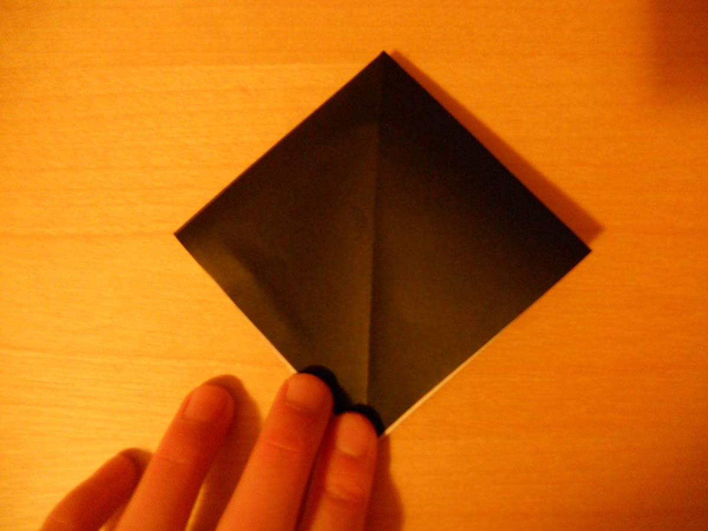

Home
Animals
Bases
Boxes
Flowers
Objects
Folds
Origami Preliminary Base- Alternate Method
Traditional

1. White side up, crease horizontally, vertically,
and diagonally. Unfold.

2. Fold down on a diagonal.

3. Lift up the flap, as shown...

4. And squash fold.

5. Repeat step 4 behind. You're done!